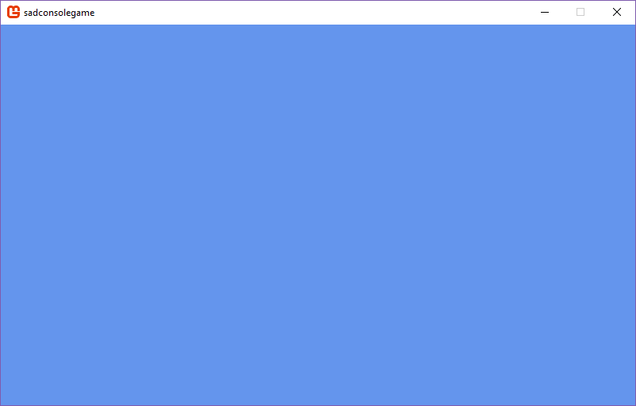

Create a new SadConsole .NET Core project
This page describes how to create a new project based on SadConsole Standard using .NET Core 3.1.
The .NET Core SDK includes easy ways to create a project, add references, and build/compile, without any sort of editor. This tutorial will show you how to create a new project using the .NET Core SDK. You can then open that project with your editor or IDE of choice.
SadConsole uses MonoGame 3.7+.
It may be easier to create a new project using the .NET Core SadConsole templates. For more information, see Create a new SadConsole .NET Core project with the SadConsole templates.
You can also create a new project in Visual Studio.
Prerequisites
Download and install the .NET Core 3.1 SDK. You can use .NET Core 2.1 or .NET Core 3.1. To see what versions you have, run dotnet --info. If this command fails, your install may have failed, you don't have .NET Core, or it's not added to your terminal path variable.
Create your working folder
After you have a .NET Core SDK installed, open up a command shell. If you're unsure how to do that, search the internet for a tutorial.
Once you have a terminal open, navigate to the folder you want to code in. This tutorial just assumes you're in a clean folder waiting to input commands. For example, I opened a shell window on Windows and ran the following commands:
mkdir sadconsolegame
cd sadconsolegame
It's highly likely that those commands work on every operating system, in the case that they don't, they'll be similar to this. Please refer to any documentation related to your operating system.
Warning
The folder name you use (in this example sadconsolegame) cannot be sadconsole. The default behavior for .NET Core is to create a project file named the same as the folder, and then the output file will be the same name as the project. This will cause a clash.
Download the template
Next, install the unofficial MonoGame for .NET Core template.
dotnet new --install MonoGame.Template.CSharp
Create a project
Next, create your project.
dotnet new mgdesktopgl
You can now run your game, though it's just a standard MonoGame game, without SadConsole.
dotnet run
The preceding command will display a window with the default background for MonoGame. You can close this window and go back to your shell.

Add reference to SadConsole
Back in the shell, type the following command to add the SadConsole NuGet project to your game.
dotnet add package SadConsole
You should see output similar to the following:
info : Adding PackageReference for package 'SadConsole' into project 'c:\projects\sadconsolegame\sadconsolegame.csproj'.
log : Restoring packages for c:\projects\sadconsolegame\sadconsolegame.csproj...
info : GET https://api.nuget.org/v3-flatcontainer/SadConsole/index.json
info : GET https://dotnetmyget.blob.core.windows.net/artifacts/roslyn/nuget/v3/flatcontainer/SadConsole/index.json
info : NotFound https://dotnetmyget.blob.core.windows.net/artifacts/roslyn/nuget/v3/flatcontainer/SadConsole/index.json 3421ms
info : OK https://api.nuget.org/v3-flatcontainer/SadConsole/index.json 7716ms
log : Installing SadConsole 8.0.0.
info : Package 'SadConsole' is compatible with all the specified frameworks in project 'c:\projects\sadconsolegame\sadconsolegame.csproj'.
info : PackageReference for package 'SadConsole' version '8.0.0' added to file 'c:\projects\sadconsolegame\sadconsolegame.csproj'.
info : Committing restore...
log : Generating MSBuild file c:\projects\sadconsolegame\obj\sadconsolegame.csproj.nuget.g.targets.
info : Writing lock file to disk. Path: c:\projects\sadconsolegame\obj\project.assets.json
log : Restore completed in 8.06 sec for c:\projects\sadconsolegame\sadconsolegame.csproj.
Create the game
The preceding command added a reference to SadConsole, but we need to recode the startup of your game to launch SadConsole instead of MonoGame.
The MonoGame template adds a Game1.cs file, this is not needed as we'll be recoding how the game starts up. You can delete this file with either the following shell command: del Game1.cs or rm Game1.cs.
Next, use your favorite editor and edit the Program.cs file. Change the using directives at the top of the file to the following:
using System;
using SadConsole;
using Microsoft.Xna.Framework;
using Console = SadConsole.Console;
Next, change the code inside of the Main method from:
static void Main()
{
using (var game = new Game1())
game.Run();
}
to
static void Main()
{
// Setup the engine and create the main window.
SadConsole.Game.Create(80, 25);
// Hook the start event so we can add consoles to the system.
SadConsole.Game.OnInitialize = Init;
// Start the game.
SadConsole.Game.Instance.Run();
SadConsole.Game.Instance.Dispose();
}
Next, add the Init method referenced by the preceding code. This method is used to setup your starting console. This code should be added after static void Main()
static void Init()
{
var console = new Console(80, 25);
console.FillWithRandomGarbage();
console.Fill(new Rectangle(3, 3, 23, 3), Color.Violet, Color.Black, 0, 0);
console.Print(4, 4, "Hello from SadConsole");
SadConsole.Global.CurrentScreen = console;
}
Now, run the game again with dotnet run from your shell, and you'll see the following:

The final Program.cs file should look like the following:
using System;
using SadConsole;
using Microsoft.Xna.Framework;
using Console = SadConsole.Console;
namespace sadconsolegame
{
public static class Program
{
static void Main()
{
// Setup the engine and create the main window.
SadConsole.Game.Create(80, 25);
// Hook the start event so we can add consoles to the system.
SadConsole.Game.OnInitialize = Init;
// Start the game.
SadConsole.Game.Instance.Run();
SadConsole.Game.Instance.Dispose();
}
static void Init()
{
var console = new Console(80, 25);
console.FillWithRandomGarbage();
console.Fill(new Rectangle(3, 3, 23, 3), Color.Violet, Color.Black, 0, 0);
console.Print(4, 4, "Hello from SadConsole");
SadConsole.Global.CurrentScreen = console;
}
}
}
Next steps
Now that you have the project created and working, check out the existing tutorials. These will walk you through the basics.